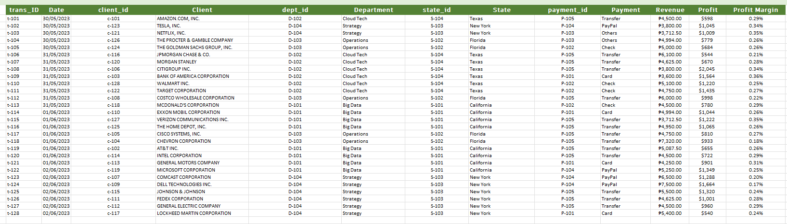
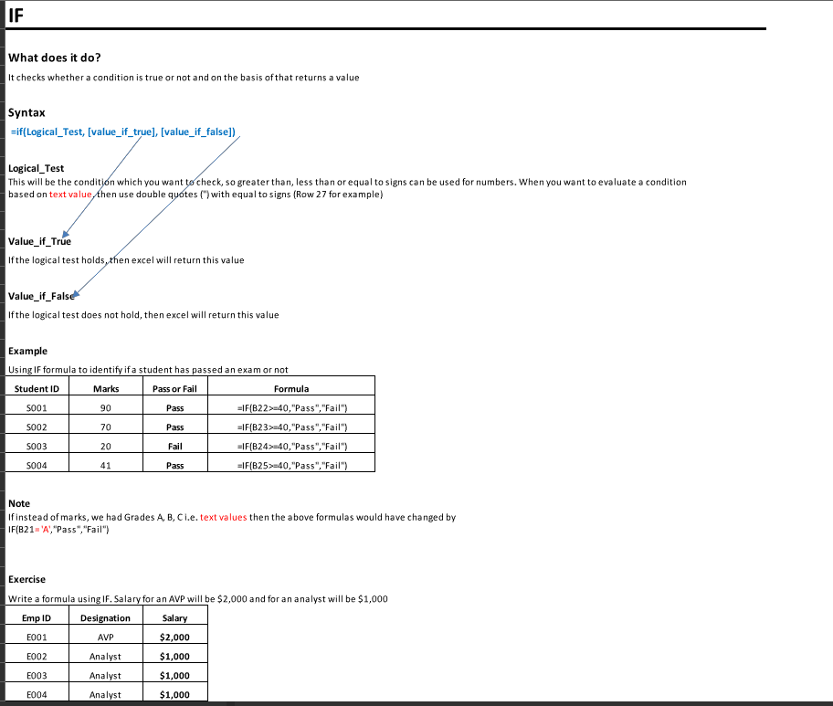
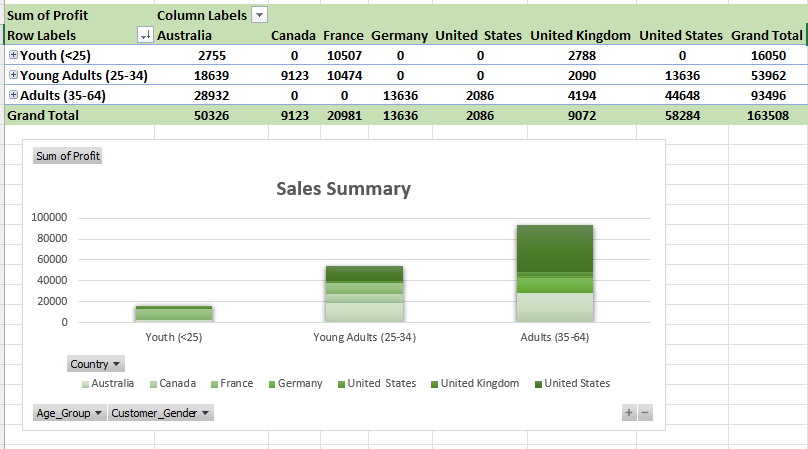
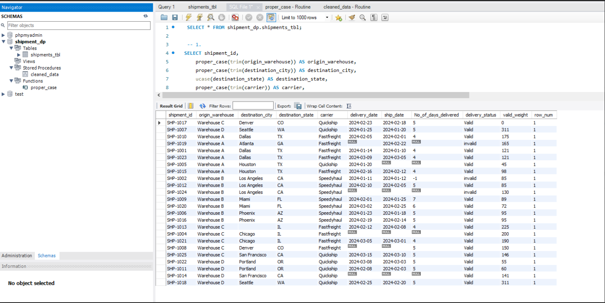
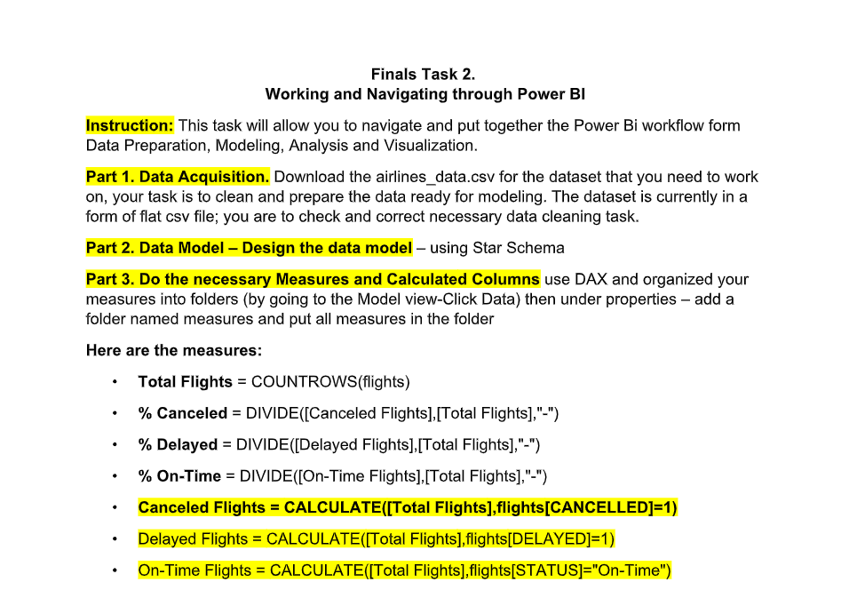
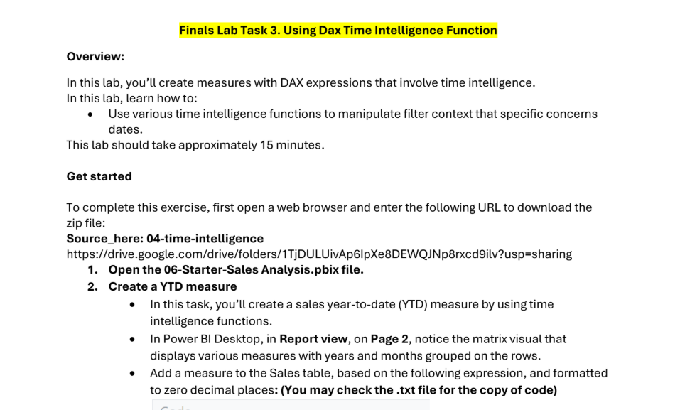
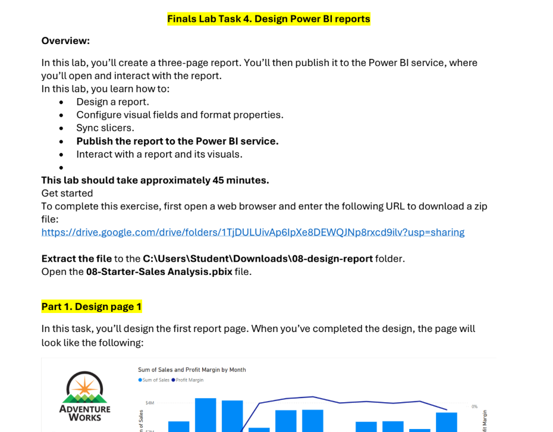
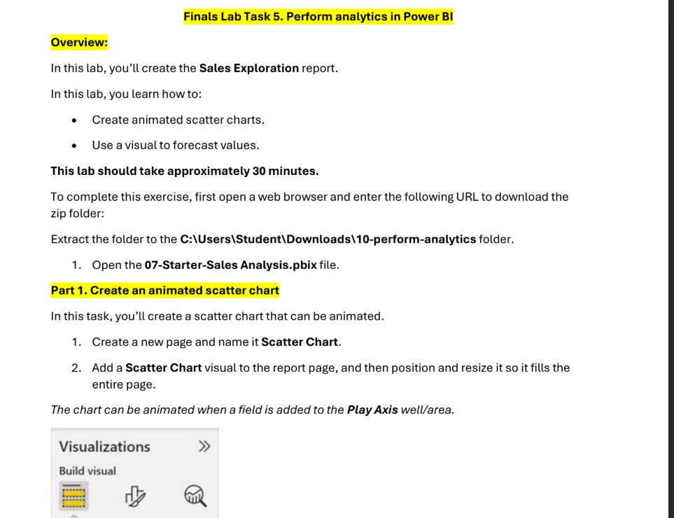
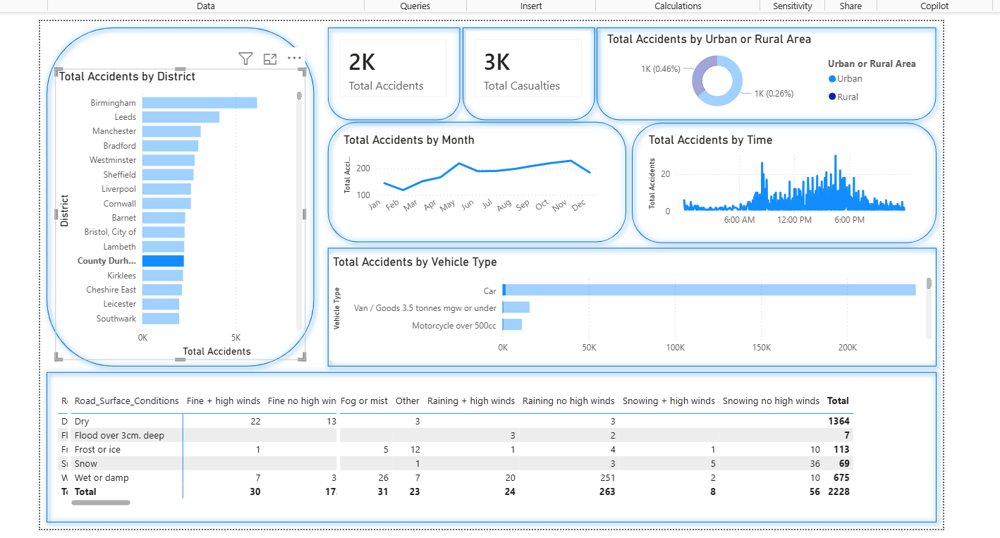

Hi, Abigail Balarag
BSCS - C301
I am a hardworking student who is dedicated, focused, and committed to achieving my goals. I consistently put in effort to understand and complete tasks thoroughly, manage my time effectively, and strive for excellence in all my academic responsibilities.

MIDTERMS PROJECTS

Demo File for Data Preparation and Cleaning
A project shows how to clean and organize data by fixing errors, removing duplicates, and handling missing values.
Show Task →MS Excel Functions
A built-in formulas that help perform calculations, analyze data, and automate tasks in spreadsheets.
Show Task →
Data Cleaning and Preparation
A process of organizing and correcting raw data to ensure it is accurate, consistent, and ready for analysis.
Show Task →
Pivot Tables and Charts in Excel
Pivot Tables and Charts in Excel are tools used to summarize, analyze, and visualize large amounts of data in a clear and organized way.
Show Task →
Asking the Right Questions
A process of identifying clear and relevant questions that guide data collection and analysis to better understand a problem.
Show Task →
Demo Creating Dashboards in Excel
A project where creating dashboards in Excel involves organizing and visualizing data to provide clear insights and make analysis easier.
Show Task →
Power Query Demo
This project is about using Power Query in Excel to clean, transform, and organize raw data into a structured format ready for analysis.
Show Task →Normalization using Power Query
This project focuses on using Power Query in Excel to normalize data by organizing it into structured tables, reducing redundancy, and preparing it for efficient analysis.
Show Task →
FINALS PROJECTS

Dirty Shipments
This project focuses on cleaning the “Dirty Shipments” dataset by fixing errors, correcting text formats, removing inconsistencies, and organizing messy data.
Show Task →Data Preparations and Analysis using SQL
This project focuses on data preparation and analysis using SQL to clean, organize, and process data for accurate insights.
Show Task →
ESSAY
This essay task is about understanding the important skills and responsibilities of becoming a data analyst and learning how SQL can be integrated into data analysis to manage, organize, and analyze data effectively.
Show Task →
Navigating Power BI
This project focuses on learning how to navigate Power BI and use its tools for data visualization and reporting.
Show Task →
DAX Time Intelligence Function
This project focuses on using DAX Time Intelligence Functions to analyze and compare data based on dates and time periods. It helps organize and calculate time-based data to generate meaningful insights and improve data analysis in reports and dashboards.
Show Task →
Designing Interactive Reports
This project focuses on designing interactive reports in Power BI to present and analyze data clearly.
Show Task →
Forecasting Reports in PowerBi
This project focuses on creating forecasting reports in Power BI to predict future trends and support data-driven decision-making.
Show Task →
Road Traffic Accident Data - United Kingdom
This project focuses on cleaning and analyzing Road Traffic Accident Data from the United Kingdom using Power BI to identify accident trends, road conditions, and factors affecting road safety.
Show Task →